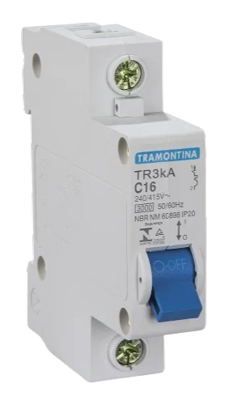

Disjuntor: conceitos e aplicações
Funciona como um protetor e um interruptor automático de energia. Sua função é desligar sozinho quando percebe que a energia passou dos limites seguros, evitando que eletrodomésticos queimem, além de prevenir acidentes como choques e incêndios.
O disjuntor pode funcionar de três maneiras:
Disjuntor térmico: protege contra sobrecargas. Desliga quando o circuito começa a esquentar além do normal por ter muitos aparelhos ligados juntos.
Disjuntor magnético: protege contra curto-circuitos. É preciso e rápido, caso dois fios se encostarem por acidente, haverá um corte de energia em uma fração de segundo.
Disjuntor termomagnético: é o mais comumente utilizado para casas e comércios. Ele junta as funções anteriores em um só aparelho.
Alguns fatores que devem ser levados em conta antes de escolher um disjuntor são as fases e a carga.
Divisão por fase:
✦ Monopolar/unipolar: usa um fio de base, serve para circuitos mais leves e simples.
Ex: lâmpadas, tomadas comuns (127V ou 220V)
✦ Bipolar: Usa dois fios de base, usado para equipamentos mais potentes.
Ex: chuveiros, torneiras elétricas.
✦ Tripolar: Usa três fios de base, usado para equipamentos pesados.
Ex: motores elétricos.
Divisão por cargas:
As letras indicam a velocidade que o disjuntor vai desligar.
✦ Curva B: de alta velocidade, usado para coisas que só esquentam.
Ex: chuveiros, lâmpadas incandescentes.
✦ Curva C: de média velocidade, usado para aparelhos que possuem motor.
Ex: máquina de lavar, geladeira, lâmpadas fluorescentes.
✦ Curva D: < /i> de baixa velocidade, feito para aguentar cargas muito grandes na hora de partida.
Ex: transformadores.
